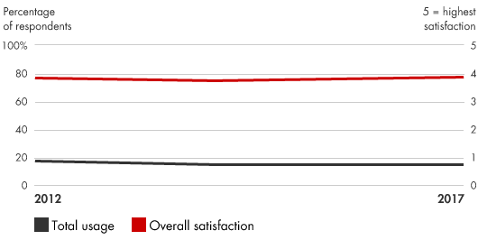
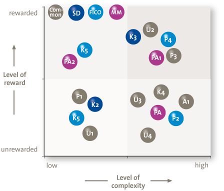

📘معرفی ابزار
یک راهکار مبتنی بر مهندسی مجدد فرآیندهای کسب و کار است. کاهش پیچیدگی به شرکتها کمک میکند تا استراتژی، سازماندهی، محصولات، فرایندها و فنآوری اطلاعات شان را سادهتر کنند. کاهش پیچیدگی هر کدام از این موضوعات فرصتهایی را برای سادهسازی در موضوعات دیگر ایجاد میکند. پیچیدگی بیش از حد، غالبا ناشی از بروکراسیهایی است که به طور غیر ضروری مدل عملیاتی شرکت را پیچیده و منجر به رشد میکند. لذا هزینهها بیشتر و بازده کمتر میشود. کاهش پیچیدگی نقطه عطفی را مییابد که در آن محصولات یا خدمات بطور کامل نیازهای مشتری را با کمترین هزینه برآورده میکنند. به عنوان مثال، با ساده کردن خطوط تولید میتوان ساختار سازمان و تصمیمات را برای ارایه خدمت به مشتریان اصلی خود سادهتر کرد و در عین حال تقاضاهای مربوط به فرآیندهای کسبوکار و سیستمهای اطلاعاتی را نیز کاهش داد.
🆕بهروزرسانی ۱۴۰۵
این بخش در نسخهٔ آنلاین ۱۴۰۵ افزوده شده است. متن اصلی کتاب (آبان ۱۳۹۹) در بخشهای بعد بدون تغییر آمده است.
آمار و شواهد تازه
- در نظرسنجی McKinsey فقط حدود یکسوم سازمانها هوش مصنوعی را در مقیاس سازمانی توسعه دادهاند؛ بقیه در مرحلهٔ آزمایش یا مقیاس جزئیاند. (منبع: McKinsey)
- در ۱۸امین State of Agile، از هر پنج نفر یک نفر میگوید به دادههای خود «اصلاً اعتماد ندارد». (منبع: ITPro)
چه چیزی تغییر کرده؟
کاهش پیچیدگی اکنون شامل «بدهی فناوری و ابزاری» هم میشود: سازمانهایی که هر سال چند ابزار هوش مصنوعی جدا میخرند، پیچیدگی جدیدی میسازند. پیش از افزودن ابزار تازه، مرور فهرست ابزارها، محصولات و گزارشها برای حذف یا ادغام توصیه میشود. (این بند جمعبندی ویراستار است، نه یافتهٔ آماری.)
نمونه ابزارها و نرمافزارهای امروزی
نامها صرفاً نمونهاند و توصیه یا تبلیغ تجاری نیستند؛ شرایط دسترسی و تحریمها را برای سازمان خود بررسی کنید.
منابع این بخش
🧩فرآیند اجرا
- شناخت منابع پیچیدگی و بررسی توازن بین عملیات و ایجاد تنوع (سفارشی سازی) برای مشتریان
- شناسایی فرصتها برای سادهسازی محصولات، ساختارهای سازمان، فرایندهای کسبوکار و سیستمهای اطلاعاتی برای صرفهجویی در هزینهها و افزایش تمرکز بر روی مشتریان
- اقدام برای جلوگیری از بازگشت پیچیدگی به محصولات جدید و دیگر فعالیتهای توسعهای
- سادهسازی فرآیندهای تصمیمگیری با مشخص کردن نقشها و فرایندها
کاهش پیچیدگی کمک می کند تا هزینههای پنهان را آشکار سازیم و به شرکتها این امکان را می دهد تا تعیین کنند که چه کالاهایی درآمدزایی میکنند ، مشتریان واقعاً چه چیزی را ارزش می گذارند و تنگناهای سازمانی یا فرایندی را در راه اقدامات مؤثر قرار می دهند و زمینه را برای رشد و سود بیشتر فراهم میکند.
💼موارد استفاده در کسبوکار
- شناسایی و تقویت تواناییهای اصلی
- ساخت کسب و کار حول نیاز مشتری
- ایجاد رویکردی منظم در ارایه محصولات یا خدمات جدید و کاستن مواردی که برای مشتریان فاقد ارزش است
- طراحی ساختار سازمانی برای حمایت از تصمیمات مهم
- حداکثر کردن کارآیی فرآیندها
- تنظیم سیستمهای اطلاعاتی با اهداف کسب و کار
📈میزان محبوبیت در طی زمان

🧪نمونه ابزار / الگو

نمونه یک چارچوب جهت تحلیل ابعاد پیچیدگی کسب و کار و کمک به اولویت دادن به موضوعات جهت کاهش پیچیدگی فرآیندها و تصمیمگیری ها. معمولا در یک بعد سطح پیچیدگی هر موضوع نشان داده میشود و در بعد دیگر سطح اهمیت یا ارزش هر موضوع برای کسب و کار به نسبت دیگر موضوعات.
⬇️چکلیست قابلدانلود
چکلیست اجرایی این ابزار را دانلود و در سازمان خود تکمیل کنید. گامها از فرآیند اجرای همین صفحه برداشته شدهاند و ستونهای مسئول، موعد و وضعیت برای پیگیری تیمی خالی گذاشته شده است.
⬇ دانلود چکلیست (Word) · کاهش پیچیدگی📚مراجع مطالعه بیشتر
- Bain & Company, Complexity Reduction: https://www.bain.com/insights/management-tools-complexity-reduction
- Compact, A Structured Approach to Reducing SAP Complexity: https:// compact.nl/en/articles/a-structured-approach-to-reducing-sap-complexity/
- Ashkenas, Ron. Simply Effective: How to Cut Through Complexity in Your Organization and Get Things Done. Harvard Business School Press, 2009.
- Collinson, Simon, and Melvin Jay. From Complexity to Simplicity: Unleash Your Organisation’s Potential. Palgrave Macmillan, 2012.
- George, Michael L., and Stephen A. Wilson. Conquering Complexity in Your Business: How Wal-Mart, Toyota, and Other Top Companies Are Breaking Through the Ceiling on Profits and Growth. McGraw-Hill, 2004.
- Gottfredson, Mark, and Keith Aspinall. “Innovation Versus Complexity: What Is Too Much of a Good Thing?” Harvard Business Review, November 2005.
- Mariotti, John L. The Complexity Crisis: Why Too Many Products, Markets, and Customers Are Crippling Your Company—and What to Do About It. Adams Media, 2008.